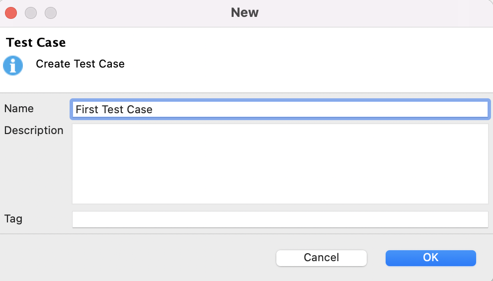
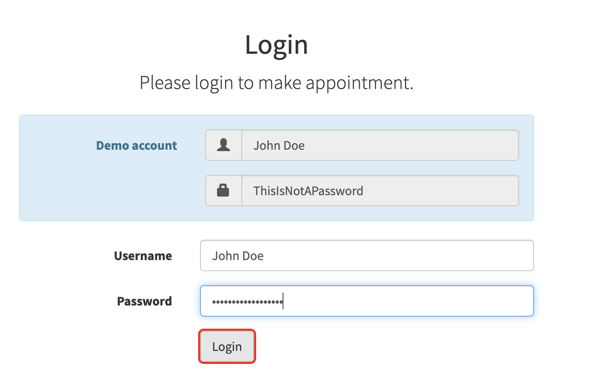
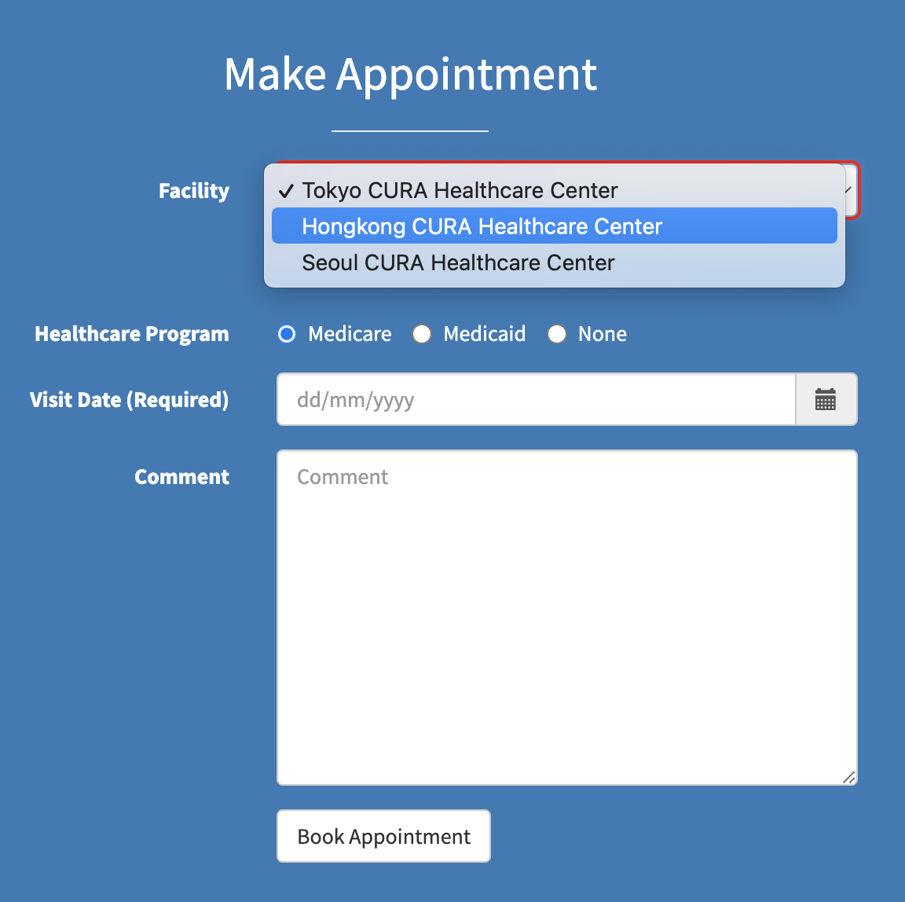
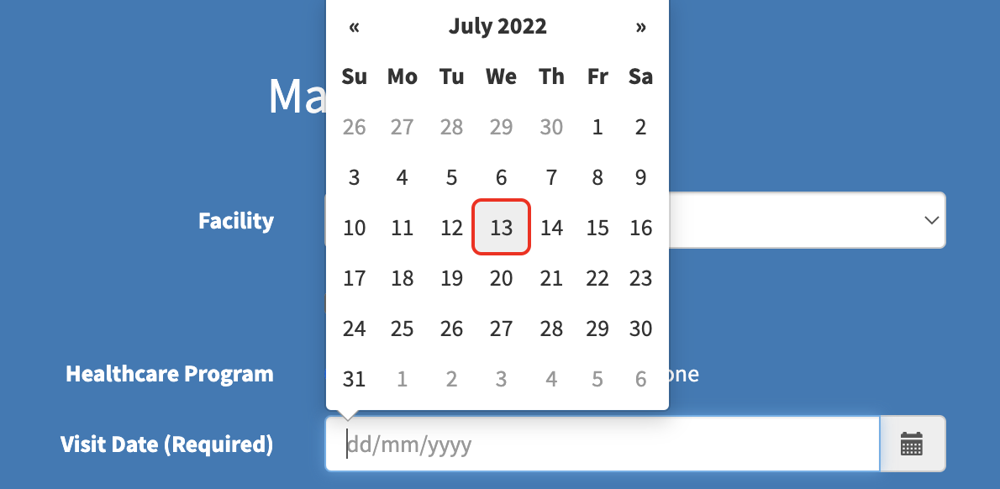
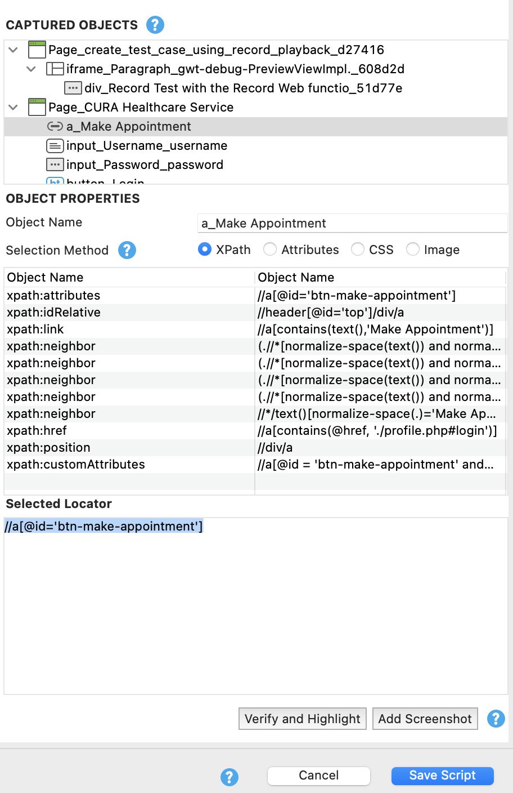
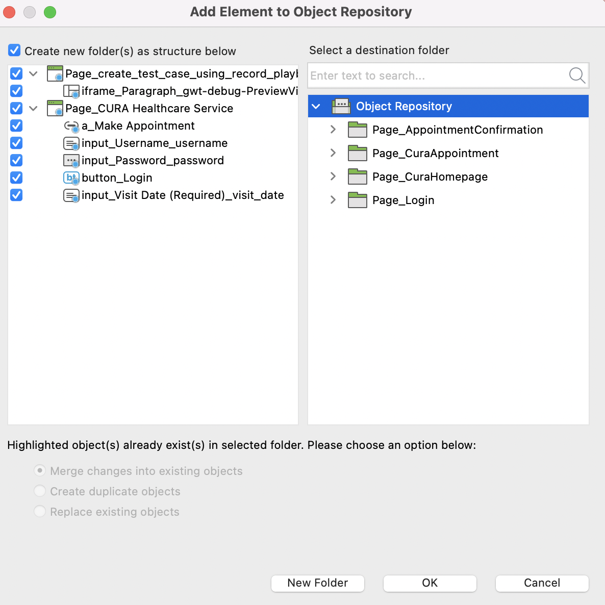
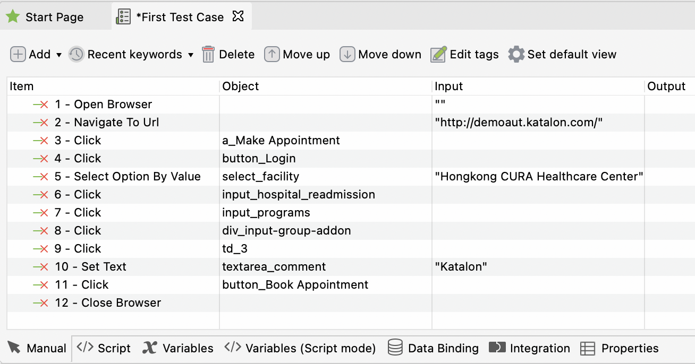

Record Test with the Record Web function
Scenario: To make an appointment
- Launch the application under test (Example: http://demoaut.katalon.com/)
- Click the Make Appointment button
- Enter a valid username, password, and click Login
- Make an appointment
Follow the below steps to get familiar with the Record & Playback feature for Web UI tests
Step 1: Launch Katalon Studio and click New > Test Case on the main toolbar. Provide a name for your test case and click OK. An empty test case is created.

Step 2: Click Record Web from the main toolbar.

Step 3: The Record dialog displays.

Step 4: Select a browser, then click Record to start recording the test case.

Step 5: Once your application has been launched, click on the Make Appointment button. You are directed to the Login page.

Step 6: Enter valid username and password (John Doe and ThisIsNotAPassword), then click Login.

Step 7: Once the Make Appointment page has been loaded, select the value Hongkong CURA Healthcare Center from the Facility dropdown menu.

Step 8: Select the Apply for hospital readmission checkbox.
Step 9: Then move the cursor to click on the Medicaid checkbox.
Step 10: Click the calendar icon next to Visit Date (Required). Select a date.

Step 11: Enter text in the Comment field.
Step 12: Click Book Appointment.
Step 13: You can stop the recording anytime by clicking Stop. You can select the Selection Method for the captured objects. The Basic mode is recommended to manual testers who have just started automated testing. With basic mode, Katalon Studio automatically generates robust and unique selectors for captured objects.
Advanced testers who want to manually input the selectors have the option to choose between CSS and XPath modes. For more details about Selection Method, refer to Manage Web Test Objects.

Step 14: When you are done recording, click OK to save the recorded actions into Katalon Studio.
You are prompted to save captured objects to the Object Repository, which can be reused whenever needed. You can also create a folder to maintain page objects in desired structure. Click OK to continue.

Step 15: Recorded objects and actions are saved in the test case as shown below.

Click Run to execute recorded test cases in your desired browser.
Script Code for Record and Playback
WebUI.openBrowser('')
WebUI.navigateToUrl('http://demoaut.katalon.com/')
WebUI.click(findTestObject('Page_CURA Healthcare Service/a_Make Appointment'))
WebUI.click(findTestObject('Page_CURA Healthcare Service (1)/button_Login'))
WebUI.selectOptionByValue(findTestObject('Page_CURA Healthcare Service (2)/select_facility'), 'Hongkong CURA Healthcare Center', true)
WebUI.click(findTestObject('Page_CURA Healthcare Service (2)/input_hospital_readmission'))
WebUI.click(findTestObject('Page_CURA Healthcare Service (2)/input_programs'))
WebUI.click(findTestObject('Page_CURA Healthcare Service (2)/div_input-group-addon'))
WebUI.click(findTestObject('Page_CURA Healthcare Service (2)/td_3'))
WebUI.setText(findTestObject('Page_CURA Healthcare Service (2)/textarea_comment'), 'Katalon')
WebUI.click(findTestObject('Page_CURA Healthcare Service (2)/button_Book Appointment'))
WebUI.closeBrowser()